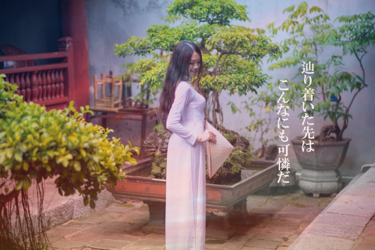
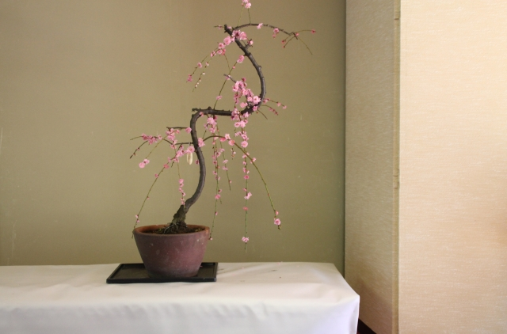
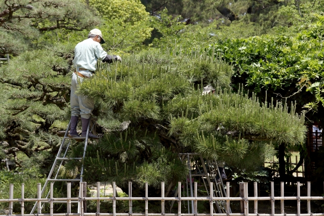
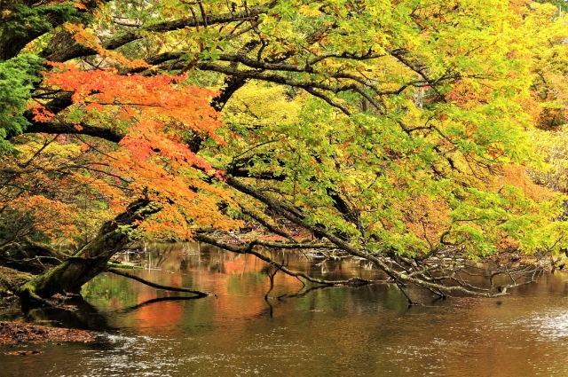
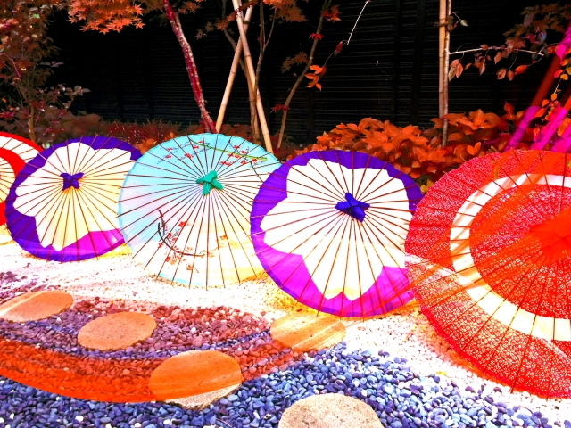

-東京ドーム約５個分に広がる、壮大な盆栽苑-
当盆栽苑では季節ごとに姿を変える盆栽の表情がお楽しみいただけます。

春は”桜"をイメージする方も多いのではないでしょうか。当苑では、春にしか咲かない桜の盆栽を期間限定で展示しております。その佇まいはまるでこれから育ってゆく小さな赤ん坊のような姿です。
夏は、一番緑が生い茂る季節です。そこで、剪定の体験を行なっております。インストラクターと一緒に１つの木を綺麗に整えてあげます。「ご自宅の庭の剪定がなかなか上手くいかない」という方や、近年ではニューファミリー層のお客様も足を運んでおります。

秋は、当苑にある森林公園にて綺麗な紅葉がご覧いただけます。なかでも紅葉並木は全国各地からいらっしゃった観光客の方々で連日賑わっております。 また、無料のロードバイクの貸し出しを行なっております。少し肌寒い空気を感じながら紅葉を巡るのはとても気持ちがいいです。
冬は「クリスマス期間限定」のイルミネーションライトアップを開催しております。日本伝統の和傘をモチーフにしたライトアップで一味違うクリスマスをお楽しみいただけます。( ＊開催期間は、12/1~12/31までとなっております)
